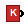
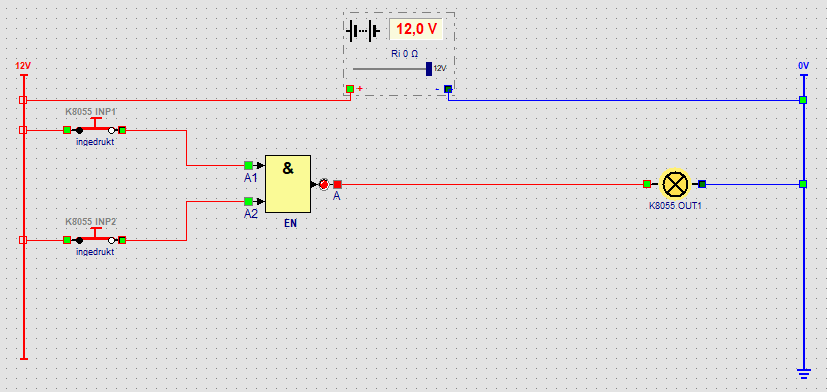

Une Velleman K8055Logic peut aussi utiliser une Velleman K8055 (ou la VM8055 toute montée) : une carte d’expérimentation USB avec des boutons-poussoirs et des LED. Pour commencer, rien à installer ni à brancher : appuyez sur un bouton de la carte, et un circuit dans Logic allume une LED sur la carte.
| Bouton | Nom | Qu’est-ce que c’est ? |
|---|---|---|
| Entrée K8055 | Un bouton-poussoir à deux bornes dans le circuit. Il est fermé tant que la vraie entrée est active. Les entrées 1, 2 et 3 ont chacune un bouton sur la carte (INP1, INP2, INP3). Branchez votre propre bouton entre l’entrée et GND. Sans carte, appuyez dessus avec la souris. |
| Sortie K8055 | Une lampe de 5 V à deux bornes. Quand elle brille (par ex. à la sortie d’une porte), Logic active la vraie sortie, et la LED de la carte pour cette sortie s’allume. | |
| Entrée analogique K8055 | Une source de tension de 0 à 5 V à deux bornes (+ en haut, − en bas). Avec la carte, la tension suit le bouton rotatif A1 ou A2 de la carte (ou un capteur sur cette entrée) ; sans carte, réglez-la avec le curseur. Clic droit : A1 ou A2. |
Clic droit pour choisir l’entrée (INP1 à INP5) ou la sortie (OUT1 à OUT8). Les deux boutons se trouvent dans la barre des composants au niveau Avancé, à côté de ceux de la carte Arduino. Vous pouvez utiliser une K8055 et un Arduino ensemble.
Rien à faire. Branchez la carte sur le port USB et placez une entrée ou une sortie K8055 sur le panneau : en deux secondes, elle est connectée. L’inscription K8055 INP1 au-dessus du bouton devient alors rouge au lieu de gris, et l’info-bulle indique « La K8055 est connectée ». Débranchez la carte et tout fonctionne de nouveau à l’écran.

La K8055 a deux entrées analogiques, A1 et A2. Elles mesurent une tension de 0 à 5 V en 256 petits pas (0 à 255). Chaque entrée a déjà un bouton rotatif sur la carte. L’entrée analogique K8055 dans Logic est une petite source qui donne exactement cette tension : tournez le bouton, et la tension de votre circuit à l’écran change.

Une sortie de la K8055 ne fournit pas de tension : elle fonctionne comme un interrupteur vers GND (collecteur ouvert). Quand la sortie est active, sa borne (par ex. O1) est reliée à GND. Il vous faut donc un plus, par exemple le 5V de votre Arduino. Placez votre composant entre ce 5V et la borne de la sortie, et reliez le GND de l’Arduino au GND de la K8055.
| Quoi | Comment |
|---|---|
| LED | 5V → résistance de 220 Ω → patte longue de la LED ; patte courte → O1 |
| Buzzer actif | 5V → la patte + (la longue) ; l’autre patte → O1 |
| Petit relais (5 V) | 5V → bobine → O1 ; reliez aussi la borne CLAMP au 5V |
/dev/hidraw…. Créez le fichier
/etc/udev/rules.d/99-k8055.rules avec la ligne
SUBSYSTEM=="hidraw", ATTRS{idVendor}=="10cf", MODE="0666" et rebranchez la carte.